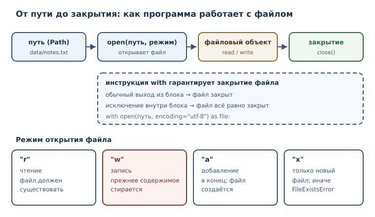
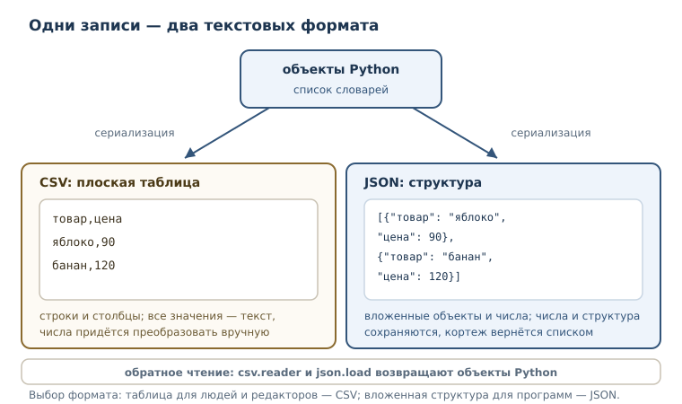

Файлы, пути и текстовые форматы
Чтение и запись файлов, pathlib, CSV и JSON, кодировки и безопасная работа с путями: как сохранить результат и прочитать его обратно.
В этой главе
Всё, что программа хранит в переменных, исчезает вместе с процессом. Для учебных примеров этого достаточно, но настоящая работа почти всегда требует памяти за пределами запуска: настройки должны пережить перезапуск, отчёт — дождаться утра, а результат вычислений — попасть в другую программу. Значит, нужно научиться читать и записывать файлы и договариваться о формате, в котором сведения передаются.
Эта глава — про границу между программой и файловой системой. На границе
всегда есть внешние обстоятельства: файла может не быть, он может быть
занят, в нём может оказаться текст в другой кодировке. Поэтому здесь же
появится инструкция with, которая гарантирует корректное освобождение
ресурса, и два формата обмена — CSV и JSON.
19.1 Что вы сможете после этой главы
- строить пути через
pathlibи не склеивать их вручную; - открывать файл в нужном режиме, читать его целиком, построчно и по частям;
- записывать текст, добавлять строки в конец и безопасно создавать новый файл;
- закрывать файлы надёжно, с помощью
with, и понимать, что такое контекстный менеджер; - указывать кодировку и объяснять, почему без неё возникают ошибки;
- читать и писать CSV и JSON и понимать, какие типы Python им соответствуют.
19.2 Зачем программе файлы
Представьте программу, которая ведёт журнал заказов. Пока она работает, заказы лежат в списке словарей. Закрыли программу — список исчез: память принадлежала процессу, а не диску. Чтобы заказы сохранились, их нужно сериализовать — превратить объекты программы в последовательность символов или байтов, пригодную для хранения, — и записать в файл. При следующем запуске выполняется обратная операция: файл читается и превращается обратно в списки и словари.
Сериализация — преобразование объектов программы в формат, пригодный для хранения или передачи, и обратное чтение. Формат может быть текстовым (CSV, JSON) или двоичным; главное, что у него есть правила, по которым запись превращается обратно в значения.
Файл отличается от коллекции в памяти ещё и тем, что он внешний ресурс. Его нужно открыть, затем обязательно закрыть; он может отсутствовать; его может одновременно держать другая программа; наконец, доступ к нему может быть запрещён правами операционной системы. Ошибки на границе с файловой системой — нормальная часть работы, а не признак поломки программы.
19.3 Путь и pathlib
Путь — адрес файла или каталога в файловой системе. Путь бывает
относительным (data/report.txt) и абсолютным (/home/user/data/report.txt).
Относительный путь отсчитывается от текущего каталога процесса.
Склеивать пути строками через / или \\ — плохая идея: разделитель зависит
от операционной системы, а забытый разделитель даёт неверный адрес. В
стандартной библиотеке есть модуль pathlib — объектное представление
путей: Path, чтение и запись, обход каталогов.
from pathlib import Path
p = Path("data") / "report.txt"
print(p.name)
print(p.stem)
print(p.suffix)
print(p.parent)
print(p)
report.txt
report
.txt
data
data/report.txt
На Linux части пути разделяются прямым слэшем; на Windows тот же print(p)
покажет обратные. Чтобы вывод не зависел от системы, используйте
p.as_posix().
Оператор / соединяет части пути и делает это по правилам текущей системы.
У объекта пути есть полезные части: name — имя с расширением, stem — имя
без расширения, suffix — расширение, parent — каталог.
pathlib умеет не только строить адреса. Он читает и записывает текст,
обходит каталоги и проверяет существование.
import tempfile
from pathlib import Path
with tempfile.TemporaryDirectory() as tmp:
folder = Path(tmp)
(folder / "a.txt").write_text("1\n", encoding="utf-8")
(folder / "b.txt").write_text("2\n", encoding="utf-8")
names = []
for item in folder.iterdir():
names.append(item.name)
print(sorted(names))
print((folder / "a.txt").exists())
['a.txt', 'b.txt']
True
Абсолютный путь начинается от корня файловой системы, относительный — от
текущего каталога процесса. Одна и та же программа может запускаться из
разных каталогов, поэтому в тексте программы лучше опираться на явно
построенные пути, а не на догадки о том, где она запущена. Для текущего
каталога есть Path.cwd(); его значение зависит от машины, поэтому в
учебных примерах его не печатают — иначе проверяемый вывод стал бы
непредсказуемым.
В примерах этой главы используется tempfile.TemporaryDirectory — временный
каталог, который удаляется сам. Так примеры не зависят от машины и не
оставляют мусора. В реальной программе вы работаете с каталогами проекта.
19.4 Открытие файла: open и режимы
open — встроенная функция, открывающая файл и возвращающая файловый объект. Файловый объект — объект, через который программа читает или записывает данные файла. Режим открытия задаётся строкой.
| Режим | Что означает |
|---|---|
"r" |
чтение; файл должен существовать (режим по умолчанию) |
"w" |
запись с усечением: файл создаётся или очищается |
"a" |
добавление в конец; файл создаётся, если его нет |
"x" |
исключительное создание: ошибка, если файл уже есть |
"b" |
двоичный режим, вместе с одним из основных: "rb", "wb" |
"+" |
чтение и запись одновременно: "r+", "w+" |
Режим открытия файла — строка режима: 'r' чтение, 'w' запись с
усечением, 'a' добавление, 'x' исключительное создание, 'b' двоичный
режим.

Важно запомнить главное различие: "w" уничтожает прежнее содержимое
файла. Это самая частая причина потери сведений у начинающих — открыть
существующий файл на запись, чтобы «дописать», и стереть всё.
import tempfile
from pathlib import Path
with tempfile.TemporaryDirectory() as tmp:
path = Path(tmp) / "log.txt"
path.write_text("старт\n", encoding="utf-8")
with open(path, "a", encoding="utf-8") as file:
file.write("финиш\n")
print(path.read_text(encoding="utf-8"))
старт
финиш
Режим "x" защищает от случайной перезаписи: если файл уже существует,
поднимается FileExistsError. Перехватим исключение и напечатаем только его
тип, чтобы пример не зависел от текста сообщения и от пути.
import tempfile
from pathlib import Path
with tempfile.TemporaryDirectory() as tmp:
path = Path(tmp) / "once.txt"
path.write_text("занято\n", encoding="utf-8")
try:
with open(path, "x", encoding="utf-8") as file:
file.write("ещё\n")
except FileExistsError as exc:
print(type(exc).__name__)
FileExistsError
Если файла нет, а режим — "r", возникает FileNotFoundError. Эти две
ошибки стоит знать по именам: они сообщают о разных проблемах, и
обрабатывать их нужно по-разному.
Файловый объект умеет читать разными способами. read() возвращает весь
текст, readline() — одну строку, readlines() — список строк. Сам файл
можно перебирать в цикле for, и тогда строки приходят по одной, без
загрузки всего файла в память.
import tempfile
from pathlib import Path
with tempfile.TemporaryDirectory() as tmp:
path = Path(tmp) / "poem.txt"
path.write_text("раз\nдва\nтри\n", encoding="utf-8")
with open(path, encoding="utf-8") as file:
print(file.readline().strip())
print(file.readlines())
раз
['два\n', 'три\n']
Обратите внимание: readlines сохраняет символы перевода строки, поэтому
при печати списка видно \n. Если строки нужны без них, применяют strip
или splitlines.
Двоичный режим возвращает байты, а не строки. Он нужен для изображений, архивов и других данных, которые не являются текстом.
import tempfile
from pathlib import Path
with tempfile.TemporaryDirectory() as tmp:
path = Path(tmp) / "data.bin"
path.write_bytes(b"\x00\x01\x02")
with open(path, "rb") as file:
print(file.read())
b'\x00\x01\x02'
19.5 with и контекстный менеджер
Файл нужно закрывать. Пока он открыт, операционная система держит его
ресурсы, а запись может оставаться в буфере и не попасть на диск. Закрывать
вручную (file.close()) опасно: если между открытием и закрытием случится
исключение, строка close не выполнится.
Инструкция with — конструкция, гарантирующая корректное освобождение
ресурса (например, закрытие файла) при выходе из блока. Она работает с
контекстным менеджером — объектом, поддерживающим протокол
__enter__/__exit__ и используемым в инструкции with.
import tempfile
from pathlib import Path
with tempfile.TemporaryDirectory() as tmp:
path = Path(tmp) / "note.txt"
path.write_text("текст\n", encoding="utf-8")
with open(path, encoding="utf-8") as file:
print(file.closed, file.mode)
print(file.closed)
False r
True
Внутри блока файл открыт, после выхода — закрыт, причём независимо от того,
как блок завершился: обычным путём или исключением. Даже если внутри блока
произойдёт ошибка, with вызовет освобождение ресурса.
Устройство знакомо вам по обработке исключений: with — это сокращение для
try/finally, где в finally вызывается закрытие. Разница в том, что
with не даёт забыть про освобождение.
import tempfile
from pathlib import Path
with tempfile.TemporaryDirectory() as tmp:
path = Path(tmp) / "empty.txt"
try:
with open(path, encoding="utf-8") as file:
print(file.read(10))
except Exception as exc:
print("ошибка чтения:", type(exc).__name__)
ошибка чтения: FileNotFoundError
Здесь файл так и не открылся, поэтому закрывать нечего; исключение
перехвачено и обработано. В реальном коде перехватывать Exception широко не
стоит: лучше указать конкретный тип, как в примерах выше.
Одна инструкция with может управлять несколькими ресурсами сразу:
with open(a) as first, open(b) as second:. Ресурсы закрываются в обратном
порядке открытия. Собственные контекстные менеджеры появятся, когда вы
познакомитесь с классами и модулем contextlib.
19.6 Кодировка файла
Текст в файле — это байты. Чтобы превратить строку в байты и обратно, нужна кодировка. Кодировка файла — кодировка, используемая при чтении и записи текстового файла; указывайте её явно, обычно UTF-8.
По умолчанию open берёт кодировку из локали системы. На разных машинах она
может отличаться, поэтому поведение программы окажется разным: на одной
машине файл прочитается, на другой — нет. Явный аргумент encoding="utf-8"
устраняет неопределённость.
import tempfile
from pathlib import Path
with tempfile.TemporaryDirectory() as tmp:
path = Path(tmp) / "legacy.txt"
path.write_bytes("привет".encode("cp1251"))
try:
print(path.read_text(encoding="utf-8"))
except UnicodeDecodeError as exc:
print(type(exc).__name__)
print(path.read_text(encoding="cp1251"))
UnicodeDecodeError
привет
UnicodeDecodeError означает, что байты не складываются в текст по правилам
указанной кодировки. Лечится не «угадыванием», а знанием, в какой кодировке
файл был создан. Если вы сами пишете файл, пишите в UTF-8 и указывайте
encoding="utf-8" при каждом открытии.
19.7 CSV: табличные сведения
CSV — текстовый формат табличных данных: строки, значения разделены
запятыми или другим разделителем. Он прост, открывается в табличных
редакторах и потому популярен для обмена выгрузками. В стандартной
библиотеке есть модуль csv.
import csv
import tempfile
from pathlib import Path
with tempfile.TemporaryDirectory() as tmp:
path = Path(tmp) / "fruit.csv"
with open(path, "w", encoding="utf-8", newline="") as file:
writer = csv.writer(file)
writer.writerow(["товар", "цена"])
writer.writerow(["яблоко", 90])
writer.writerow(["банан", 120])
print(path.read_text(encoding="utf-8"))
товар,цена
яблоко,90
банан,120
Аргумент newline="" при работе с csv рекомендуется: модуль сам управляет
переводами строк. На POSIX без него часто всё работает, а при записи на
Windows появляются лишние пустые строки, поэтому для переносимого кода его
указывают всегда.
Чтение устроено так же просто, но есть важная деталь: csv не знает типов.
import csv
import tempfile
from pathlib import Path
with tempfile.TemporaryDirectory() as tmp:
path = Path(tmp) / "fruit.csv"
with open(path, "w", encoding="utf-8", newline="") as file:
writer = csv.writer(file)
writer.writerow(["товар", "цена"])
writer.writerow(["яблоко", 90])
with open(path, encoding="utf-8", newline="") as file:
for row in csv.reader(file):
print(row)
['товар', 'цена']
['яблоко', '90']
Цена 90 пришла строкой '90': формат хранит текст, а не числа. Чтобы
получить число, его нужно преобразовать явно — int(row[1]). Если этого не
сделать, сравнение и арифметика начнут вести себя неожиданно.
Когда у таблицы есть заголовок, удобнее csv.DictReader: он превращает
каждую строку в словарь, где ключи — названия столбцов.
import csv
import tempfile
from pathlib import Path
with tempfile.TemporaryDirectory() as tmp:
path = Path(tmp) / "fruit.csv"
with open(path, "w", encoding="utf-8", newline="") as file:
writer = csv.writer(file)
writer.writerow(["товар", "цена"])
writer.writerow(["яблоко", 90])
writer.writerow(["банан", 120])
with open(path, encoding="utf-8", newline="") as file:
reader = csv.DictReader(file)
for row in reader:
print(row["товар"], row["цена"])
яблоко 90
банан 120
Словарь делает код устойчивее: столбцы можно переставить, и обращение по имени продолжит работать. Обратная сторона — значения по-прежнему строки.
19.8 JSON: обмен структурами
JSON — текстовый формат обмена данными на основе объектов и массивов; в
Python ему соответствуют словари, списки, строки, числа, True/False и
None. JSON удобен тем, что одинаково понимается большинством языков и
сохраняет структуру: вложенные словари и списки остаются вложенными.
| Python | JSON |
|---|---|
dict |
объект {...} |
list, tuple |
массив [...] |
str |
строка "..." |
int, float |
число |
True, False |
true, false |
None |
null |
import json
data = {"имя": "Анна", "оценки": [4, 5], "активна": True, "город": None}
text = json.dumps(data, ensure_ascii=False)
print(text)
print(json.loads(text))
{"имя": "Анна", "оценки": [4, 5], "активна": true, "город": null}
{'имя': 'Анна', 'оценки': [4, 5], 'активна': True, 'город': None}
Функции dumps/loads работают со строкой, а dump/load — с файлом.
Аргумент ensure_ascii=False оставляет кириллицу как есть; без него текст
будет состоять из \uXXXX-последовательностей. Он корректен, но нечитаем
для человека.
import json
import tempfile
from pathlib import Path
with tempfile.TemporaryDirectory() as tmp:
path = Path(tmp) / "settings.json"
settings = {"тема": "светлая", "язык": "ru"}
with open(path, "w", encoding="utf-8") as file:
json.dump(settings, file, ensure_ascii=False, indent=2)
print(path.read_text(encoding="utf-8"))
with open(path, encoding="utf-8") as file:
loaded = json.load(file)
print(loaded["тема"])
{
"тема": "светлая",
"язык": "ru"
}
светлая
indent=2 делает файл читаемым; для машинной передачи чаще используют
компактную запись без отступов.
У JSON есть границы, о которых нужно знать заранее. Кортеж при записи превращается в массив, а при чтении вернётся списком; тип теряется. Объекты, которые не имеют представления в JSON (например, множества), сериализовать нельзя, а неверный текст не читается.
import json
print(json.dumps((1, 2)))
print(type(json.loads("[1, 2]")).__name__)
try:
json.dumps({1, 2})
except TypeError as exc:
print(type(exc).__name__)
try:
json.loads("{не json}")
except json.JSONDecodeError as exc:
print(type(exc).__name__)
[1, 2]
list
TypeError
JSONDecodeError
Обратите внимание на два разных исключения: TypeError — когда объект
нельзя превратить в JSON, JSONDecodeError — когда текст не разбирается
как корректный JSON. Это разные проблемы и лечатся по-разному.
JSON и CSV решают разные задачи. CSV — плоская таблица, удобная для редакторов; JSON — структура, удобная для программ. Если сведения вложены (заказ с позициями, пользователь с настройками), выбирайте JSON. Если это выгрузка строк и столбцов для таблицы, CSV проще и компактнее.

19.9 Типичные ошибки
- Открыть на
"w", чтобы дописать. Режим"w"очищает файл; для добавления служит"a". - Забыть закрыть файл. Без
withисключение оставит файл открытым, а запись — в буфере. Используйтеwith open(...) as file. - Не указать кодировку. Программа, работающая на одной машине, сломается
на другой. Пишите
encoding="utf-8"явно. - Забыть
newline=""в CSV. На некоторых системах появляются лишние пустые строки. - Считать значения CSV числами.
csvвозвращает строки; преобразуйте явно. - Склеивать пути строками. Используйте
Pathи оператор/. - Указывать в примере абсолютный путь. На другой машине такого каталога нет; в учебных примерах используйте временный каталог.
- Путать
TypeErrorиJSONDecodeError. Первое — объект не сериализуется, второе — текст не разбирается.
19.10 Упражнения
1. Прогнозирование вывода
Не запуская код, запишите результат. Затем проверьте и объясните.
import tempfile
from pathlib import Path
with tempfile.TemporaryDirectory() as tmp:
path = Path(tmp) / "note.txt"
path.write_text("один\nдва\n", encoding="utf-8")
with open(path, "w", encoding="utf-8") as file:
file.write("три\n")
print(path.read_text(encoding="utf-8"))
2. Путь из частей
Постройте путь отчёты/2026/январь.csv с помощью pathlib и выведите его
имя, имя без расширения, расширение и родительский каталог.
3. Чтение построчно
Дан файл с тремя строками. Напишите программу, которая печатает каждую строку
с её номером, начиная с единицы, без символа перевода строки. Используйте
enumerate или счётчик.
4. Дописать, не стирая
В файле уже есть строка первая. Напишите код, который добавит вторую строку
и выведет итоговое содержимое. Объясните, почему режим "w" здесь не
подходит.
5. Защита от перезаписи
Напишите код, который создаёт файл, только если его ещё нет, и сообщает
файл уже существует в противном случае. Проверьте оба случая на одном
запуске.
6. Кодировки
Запишите строку привет в кодировке cp1251, затем прочитайте файл как
UTF-8 и как cp1251. Объясните, почему первая попытка не удалась и что
означает UnicodeDecodeError.
7. CSV в словари
Дан CSV с заголовком товар,цена и двумя строками. Прочитайте его через
csv.DictReader и выведите для каждого товара его название и цену,
преобразованную в целое число.
8. JSON-настройки
Сохраните словарь {"тема": "тёмная", "язык": "ru", "размер": 14} в файл
JSON с отступами и кириллицей без экранирования, затем прочитайте файл
обратно и выведите значение ключа размер и его тип.
9. Мини-проект: журнал оценок
Напишите программу, которая ведёт журнал оценок в JSON:
- при запуске читает файл
grades.json, если он есть, иначе начинает с пустого словаря; - добавляет две записи «имя → список оценок»;
- сохраняет журнал в файл;
- выводит средний балл по каждому ученику с одним знаком после запятой.
Используйте with, явную кодировку и временный каталог.
10. Выбор формата
Для каждого случая выберите CSV или JSON и обоснуйте выбор:
- выгрузка продаж по дням для табличного редактора;
- конфигурация приложения с вложенными разделами;
- список контактов «имя, телефон, город»;
- заказ с несколькими позициями и адресом доставки.
Напишите короткий пример записи одного из случаев в выбранном формате.
19.11 Проверка понимания
- Чем файл отличается от коллекции в памяти? Что значит «внешний ресурс»?
- Зачем нужен
pathlib, если путь можно записать строкой? - Чем режимы
"w","a"и"x"отличаются друг от друга? - Что гарантирует инструкция
withи что такое контекстный менеджер? - Почему кодировку файла нужно указывать явно?
- Почему значения CSV-файла после чтения оказываются строками?
- Каким типам Python соответствуют объект, массив и
nullв JSON? - Чем
TypeErrorприjson.dumpsотличается отJSONDecodeErrorприjson.loads?
19.12 Что дальше
Вы научились сохранять сведения и читать их обратно. Следующий вопрос — как
обрабатывать файл, который не помещается в память или содержит миллион строк.
Читать всё целиком расточительно, а иногда и невозможно. Ответ начнётся с
устройства цикла for: он не «знает» про списки — он работает с итераторами.
Об этом — в следующей главе.